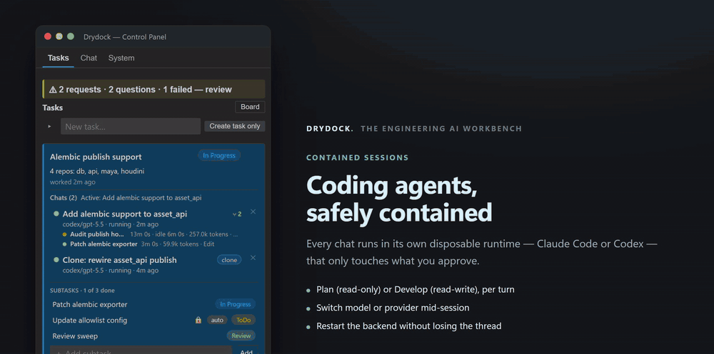
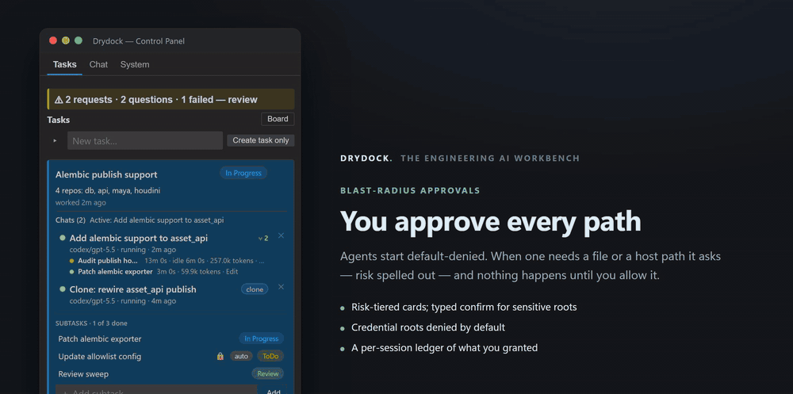
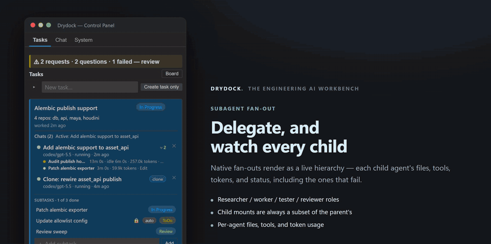
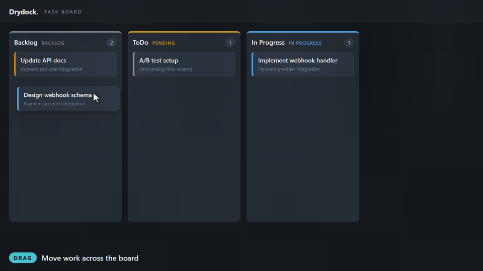
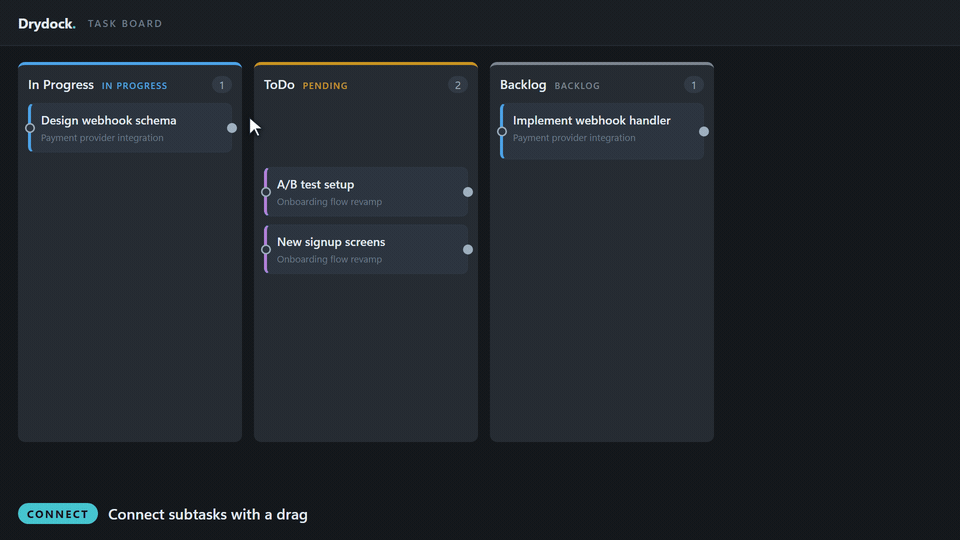
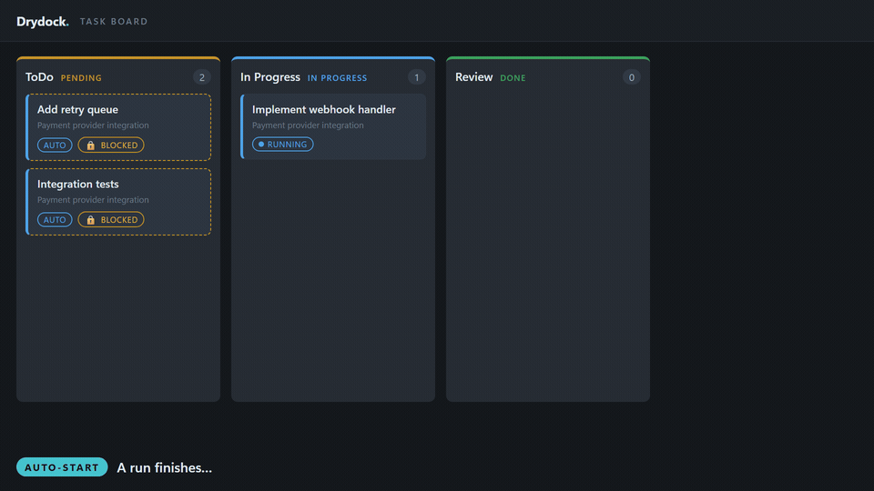
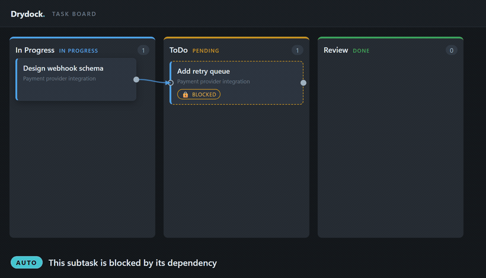
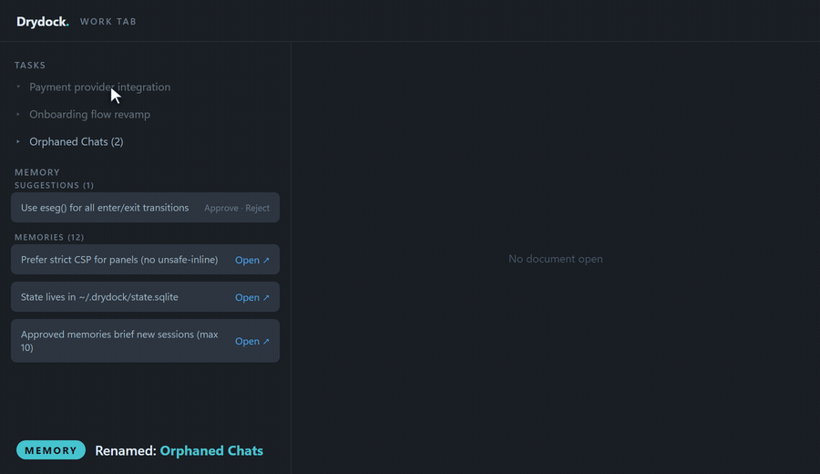

Short, looping captures of Drydock's core workflows and its task board. The core clips are the real bundled panel driven through live workflows; the task-board clips are rendered in the same design language. Each mirrors a webview harness scenario or visual test.

Every chat runs in its own disposable runtime — Claude Code or Codex. One session surface holds the conversation, rich output, the subagent hierarchy, pending approvals, open questions, and the working set.

Agents start default-denied. When one needs a file or a host path it asks, with the risk spelled out — and a sensitive root takes a typed confirmation before anything is granted.

Native fan-outs render as a live hierarchy — each child agent's files, tools, tokens, and status, including the ones that fail. Child mounts are always a subset of the parent's.

Tasks and subtasks are independent cards. Drag one between columns — the drop target highlights and the column counts update live.

Drag dot-to-dot to connect subtasks. Everything outside the parent task greys out — connections can't cross the task boundary — and the downstream card is now blocked.

When a run finishes, its card lands in Review and every dependent that opted into auto-start begins — in parallel — the moment its dependencies are done.

Blocked is computed, never stored. Finish the upstream and the dependent's lock and dashed border clear the instant it reaches a done column — no manual step.

The drawer formerly called "Chats needing a task" is now Orphaned Chats, and approved memories open as read-only drydock-memory: documents.